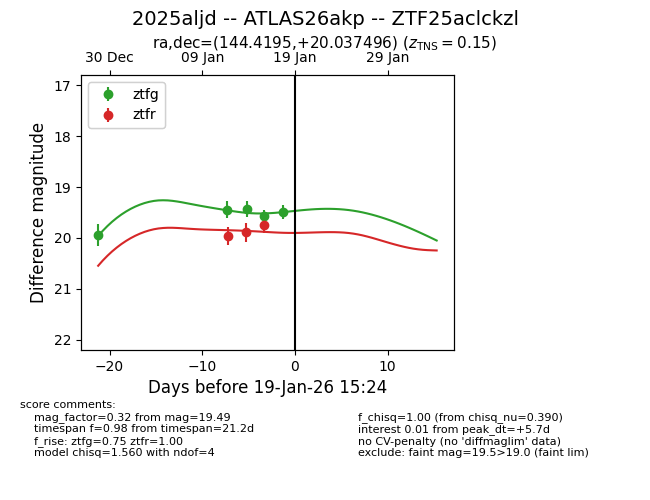
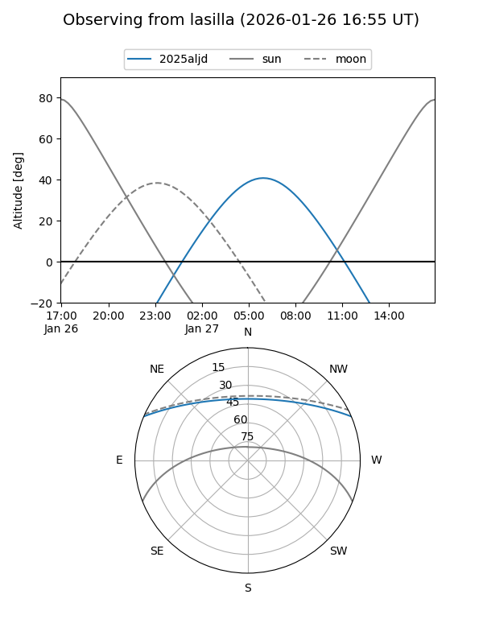
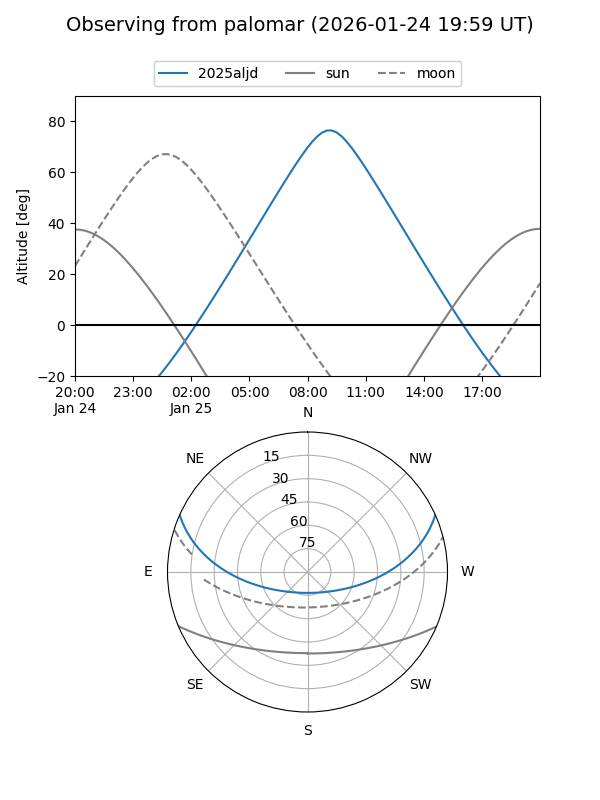
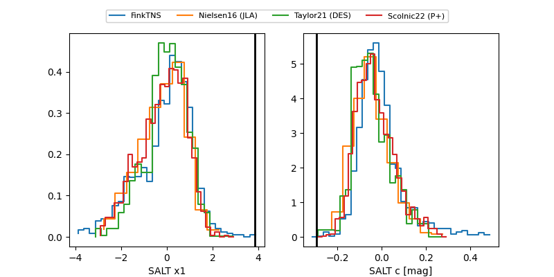

2025aljd
Target 2025aljd at 2026-01-19 02:15
Aliases and brokers:
FINK: link
Lasair: link
ALeRCE: link
TNS: link
YSE: link
alt names
ZTF25aclckzl (ztf,fink_ztf)
2025aljd (tns,yse)
ATLAS26akp (atlas)
Coordinates:
equatorial (ra, dec) = 144.4195,+20.03750
equatorial (HMS+DMS) = 09:37:40.69,+20:02:14.98
galactic (l, b) = (211.2412,+45.30976)
Flags:
Photometry:
last ztfg=19.49, ztfr=19.75
5 ztfg, 3 ztfr detections
Lightcurve

Visibility


Additional plots
